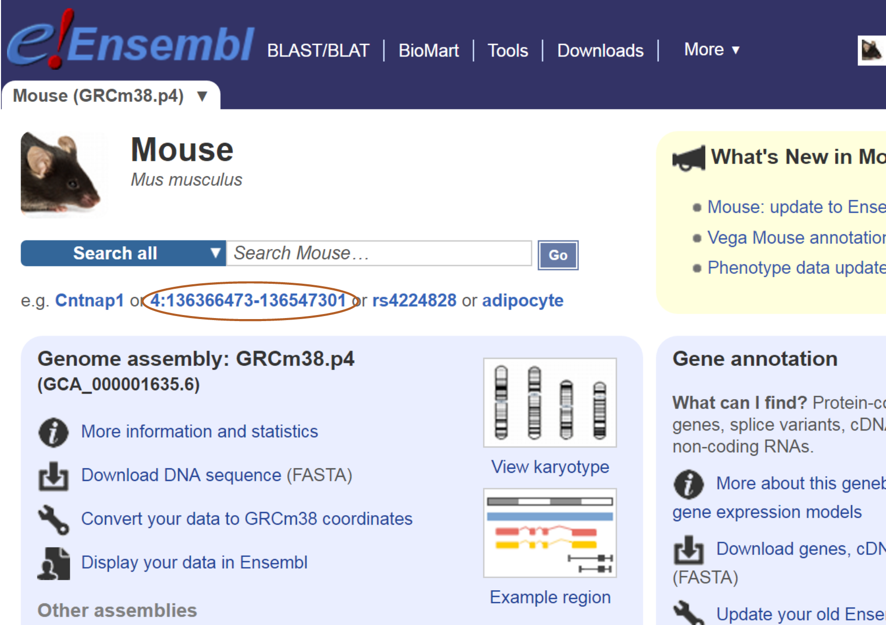
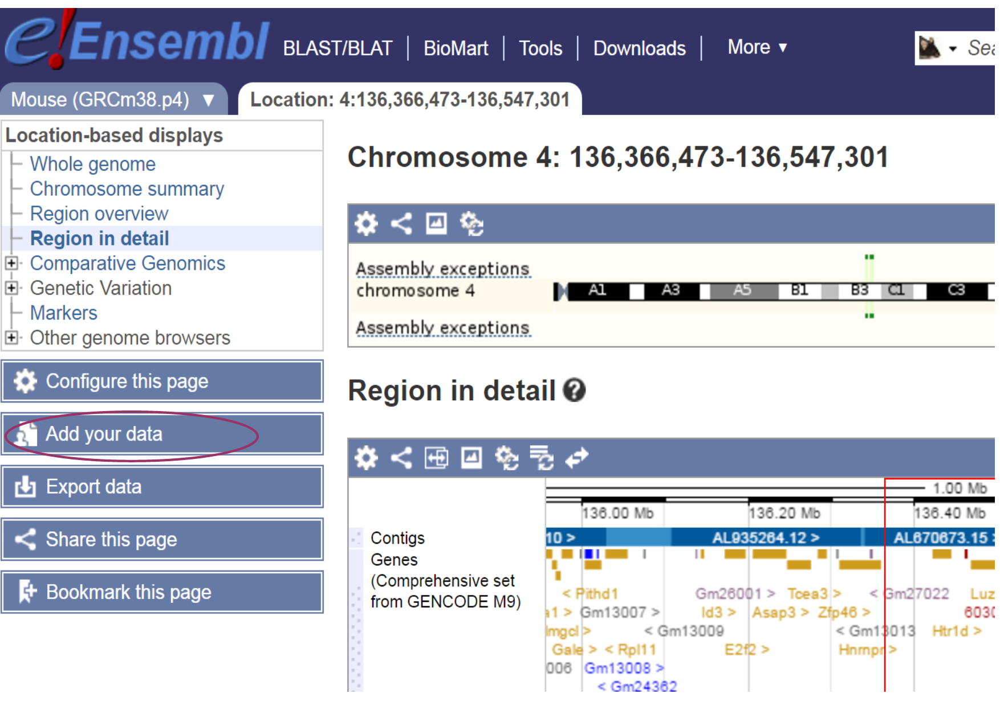
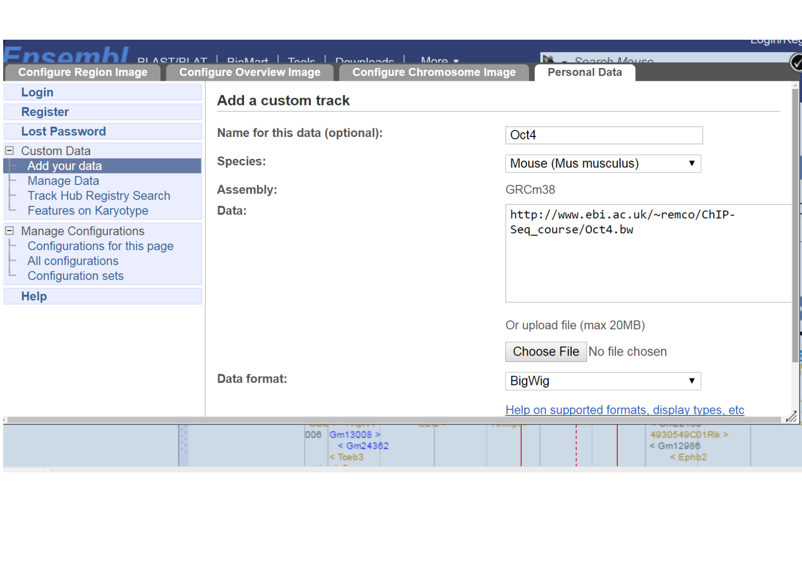
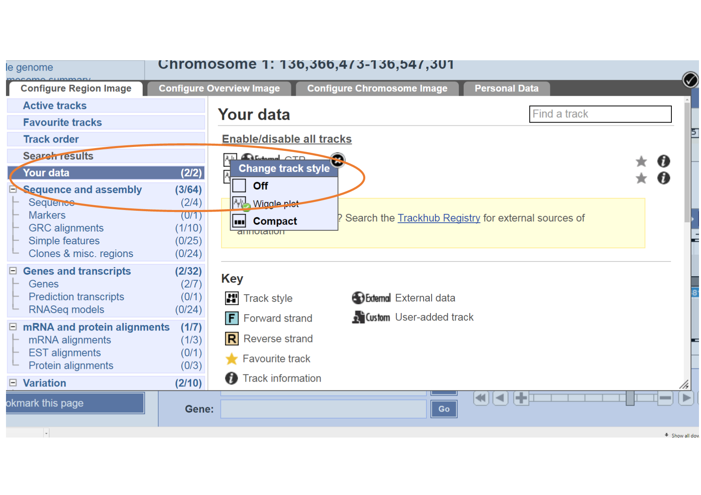

ChIP-Seq
Key Learning Outcomes
After completing this practical the trainee should be able to:
-
Perform simple ChIP-Seq analysis, e.g. the detection of immuno-enriched areas using the chosen peak caller program MACS
-
Visualize the peak regions through a genome browser, e.g. Ensembl, and identify the real peak regions
-
Perform functional annotation and detect potential binding sites (motif) in the predicted binding regions using motif discovery tool, e.g. MEME.
Resources You’ll be Using
Tools Used
MACS : \ http://liulab.dfci.harvard.edu/MACS/index.html
Ensembl : \ http://www.ensembl.org
PeakAnalyzer : \ http://www.ebi.ac.uk/bertone/software
MEME : \ http://meme.ebi.edu.au/meme/tools/meme
TOMTOM : \ http://meme.ebi.edu.au/meme/tools/tomtom
DAVID : \ http://david.abcc.ncifcrf.gov
GOstat : \ http://gostat.wehi.edu.au
Sources of Data
http://www.ebi.ac.uk/arrayexpress/experiments/E-GEOD-11431
Introduction
The goal of this hands-on session is to perform some basic tasks in the analysis of ChIP-seq data. In fact, you already performed the first step, alignment of the reads to the genome, in the previous session. We start from the aligned reads and we will find immuno-enriched areas using the peak caller MACS. We will visualize the identified regions in a genome browser and perform functional annotation and motif analysis on the predicted binding regions.
Prepare the Environment
The material for this practical can be found in the ChIP-seq section
of your manual. Please make sure that this directory also contains the
SAM/BAM files you produced during the alignment practical.
If you didn’t have time to align the control file called gfp.fastq
during the alignment practical, please do it now. Follow the same steps,
from the bowtie2 alignment step, as for the Oct4.fastq file.
Open the Terminal and go to the chipseq directory:
cd /home/trainee/chipseq
Finding enriched areas using MACS
MACS stands for Model based analysis of ChIP-seq. It was designed for identifying transcription factor binding sites. MACS captures the influence of genome complexity to evaluate the significance of enriched ChIP regions, and improves the spatial resolution of binding sites through combining the information of both sequencing tag position and orientation. MACS can be easily used for ChIP-Seq data alone, or with a control sample to increase specificity.
Consult the MACS help file to see the options and parameters:
macs --help
The input for MACS can be in ELAND, BED, SAM, BAM or BOWTIE formats (you
just have to set the –format option).
Options that you will have to use include:
-t : To indicate the input ChIP file.
-c : To indicate the name of the control file.
–format : To change the file format. The default format is bed.
–name : To set the name of the output files.
–gsize
: This is the mappable genome size. With the read length we have,
$70\%$ of the genome is a fair estimation. Since in this analysis we
include only reads from chromosome 1 (197Mbases), we will use a
–gsize of 138Mbases (70% of 197Mbases).
–tsize : To set the read length (look at the FASTQ files to check the length).
–wig : To generate signal wig files for viewing in a genome browser. Since this process is time consuming, it is recommended to run MACS first with this flag off, and once you decide on the values of the parameters, run MACS again with this flag on.
–diag : To generate a saturation table, which gives an indication whether the sequenced reads give a reliable representation of the possible peaks.
Now run macs using the following command:
macs -t <Oct4_aligned_bam_file> -c <gfp_aligned_bam_file> --format=BAM --name=Oct4 --gsize=138000000 --tsize=26 --diag --wig
Look at the output saturation table (Oct4_diag.xls). To open this file
file, right-click on it and choose “Open with” and select LibreOffice.
Do you think that more sequencing is necessary?
Open the Excel peak file and view the peak details. Note that the number of tags (column 6) refers to the number of reads in the whole peak region and not the peak height.
Viewing results with the Ensembl genome browser
It is often instructive to look at your data in a genome browser. Before, we used IGV, a stand-alone browser, which has the advantage of being installed locally and providing fast access. Web-based genome browsers, like Ensembl or the UCSC browser, are slower, but provide more functionality. They do not only allow for more polished and flexible visualisation, but also provide easy access to a wealth of annotations and external data sources. This makes it straightforward to relate your data with information about repeat regions, known genes, epigenetic features or areas of cross-species conservation, to name just a few. As such, they are useful tools for exploratory analysis.
They will allow you to get a ‘feel’ for the data, as well as detecting abnormalities and problems. Also, exploring the data in such a way may give you ideas for further analyses.
Launch a web browser and go to the Ensembl website at http://www.ensembl.org/index.html
Choose the genome of interest (in this case, mouse) on the left side of the page, browse to any location in the genome or click one of the demo links provided on the web page.
[H]  [fig:MouseHome]
Click on the Add your data link on the left, then choose Add your data in the Custom Data tab.
[H]  [fig:AddData]
Wig files are large so are inconvenient for uploading directly to the Ensemble Genome browser. Instead, we will convert it to an indexed binary format and put this into a web accessible place such as on a HTTP, HTTPS, or FTP server. This makes all the browsing process much faster. Detailed instructions for generating a bigWig from a wig type file can be found at:
http://genome.ucsc.edu/goldenPath/help/bigWig.html.
We have generated bigWig files in advance for you to upload to the Ensembl browser. They are at the following URL: http://www.ebi.ac.uk/~remco/ChIP-Seq_course/Oct4.bw (Please right click and choose “Copy Link Address” to copy the URL).
To visualise the data:
-
Paste the location above in the Data field.
-
Set data format bigWig.
-
Choose some informative name
-
Click Add data and in the next window choose the colour of your preference.
-
Click Save and close the window to return to the genome browser.
[H]  [fig:UploadURL]
Repeat the process for the gfp control sample, located at:
http://www.ebi.ac.uk/~remco/ChIP-Seq_course/gfp.bw (Please right click and choose “Copy Link Address” to copy the URL).
After uploading, to make sure your data is visible:
-
Click in the left hand panel Configure this page
-
Select the first tab in the pop up Configure Region Image
-
Click Your data in the left panel
-
Choose each of the uploaded *.bw files to confirm the Wiggle plot in Change track style pop up menu has been choosen.
-
Closing the window will save these changes.
[H]  [fig:ConfigureYourData]
Go to a region on chromosome 1 (e.g. 1:34823162-35323161), and zoom in
and out to view the signal and peak regions. Be aware that the y-axis of
each track is auto-scaled independently of each other, so bigger-looking
peaks may not actually be bigger! Always look at the values on the left
hand side axis.
What can you say about the profile of Oct4 peaks in this region?
There are no significant Oct4 peaks over the selected region.
Compare it with H3K4me3 histone modification wig file we have generated at http://www.ebi.ac.uk/~remco/ChIP-Seq_course/H3K4me3.bw .
H3K4me3 has a region that contains relatively high peaks than Oct4.
Jump to 1:36066594-36079728 for a sample peak. Do you think H3K4me3
peaks regions contain one or more modification sites? What about Oct4?
Yes. There are roughly three peaks, which indicate the possibility of having more than one modification sites in this region.
For Oct4, no peak can be observed.
MACS generates its peak files in a file format called bed file. This is a simple text format containing genomic locations, specified by chromosome, begin and end positions, and some more optional information.
See http://genome.ucsc.edu/FAQ/FAQformat.html#format1 for details.
Bed files can also be uploaded to the Ensembl browser.
Try uploading the peak file generated by MACS to Ensembl. Find the first peak and the peak with the highest score (the fifth column) in the file and see if the peak looks convincing to you.
Annotation: From peaks to biological interpretation
In order to biologically interpret the results of ChIP-seq experiments, it is usually recommended to look at the genes and other annotated elements that are located in proximity to the identified enriched regions. This can be easily done using PeakAnalyzer.
Go to the PeakAnalyzer tool directory:
cd /home/trainee/chipseq/peakanalyzer/1.4
Launch the PeakAnalyzer program by typing:
java -jar PeakAnalyzer.jar &
Click okay in the pop up error message “Can’t reach ensembl.org”. The first window allows you to choose between the split application (which we will try next) and peak annotation. Choose the peak annotation option and click Next.
We would like to find the closest downstream genes to each peak, and the genes that overlap with the peak region. For that purpose you should choose the NDG option and click Next.
Fill in the location of the peak file Oct4_peaks.bed, and choose the
mouse GTF as the annotation file. You don’t have to define a symbol file
since gene symbols are included in the GTF file.
Choose the output directory and run the program.
When the program has finished running, you will have the option to generate plots, by pressing the Generate plots button. This is only possible if R is installed on your computer, as it is on this system. A PDF file with the plots will be generated in the output folder. You could generate similar plots with Excel using the output files that were generated by PeakAnalyzer.
This list of closest downstream genes (contained in the file
Oct4_peaks.ndg.bed) can be the basis of further analysis. For
instance, you could look at the Gene Ontology terms associated with
these genes to get an idea of the biological processes that may be
affected. Web-based tools like DAVID (http://david.abcc.ncifcrf.gov)
or GOstat (http://gostat.wehi.edu.au) take a list of genes and return
the enriched GO categories.
We can pull out Ensemble Transcript IDs from the Oct4_peaks.ndg.bed
file and write them to another file ready for use with DAVID or GOstat:
cut -f 5 Oct4_peaks.ndg.bed | sed '1 d' > Oct4_peaks.ndg.tid
Motif analysis
It is often interesting to find out whether we can associate the identified binding sites with a sequence pattern or motif. We will use MEME for motif analysis. The input for MEME should be a file in FASTA format containing the sequences of interest. In our case, these are the sequences of the identified peaks that probably contain Oct4 binding sites.
Since many peak-finding tools merge overlapping areas of enrichment, the resulting peaks tend to be much wider than the actual binding sites. Sub-dividing the enriched areas by accurately partitioning enriched loci into a finer-resolution set of individual binding sites, and fetching sequences from the summit region where binding motifs are most likely to appear enhances the quality of the motif analysis. Sub-peak summit sequences can normally be retrieved directly from the Ensembl database using PeakAnalyzer. Due to the connection error we have provided the fasta sequences.
If you have closed the PeakAnalyzer running window, open it again. If it is still open, just go back to the first window.
Choose the split peaks utility and click Next. The input consists of
files generated by most peak-finding tools: a file containing the
chromosome, start and end locations of the enriched regions, and a
.wig signal file describing the size and shape of each peak. Fill in
the location of both files Oct4_peaks.bed and the wig file generated
by MACS, which is under the Oct4_MACS_wiggle/treat/ directory.
Normally we would check the option to Fetch subpeak sequences and
click Next. As we have no connection to ensembl We have provided the
subpeak sequences.
In the next window you have to set some parameters for splitting the peaks.
Separation float
: Keep the default value. This value determines when a peak will be
separated into sub-peaks. This is the ratio between a valley and its
neighbouring summit (the lower summit of the two). For example, if
you set this height to be 0.5, two sub-peaks will be separated
only if the height of the lower summit is twice the height of the
valley.
Minimum height
: Set this to be 5. Only sub-peaks with at least this number of tags
in their summit region will be separated. Change the organism name
from the default human to mouse and run the program.
Organism
: Choose Mus_musculus from the drop down list.
Since the program has to read large wig files, it will take a few minutes to run. Once the run is finished, two output files will be produced. The first describes the location of the sub-peaks, and the second is a FASTA file containing 300 sequences of length 61 bases, taken from the summit regions of the highest sub-peaks. The supplied fasta file can be found in Desktop/chipseq/peakanalyzer/1.4/Data/Oct4_peaks.bestSubPeaks.fa
Open a web bowser and go to the MEME website at http://meme-suite.org/tools/meme-chip, and fill in the necessary details, such as:
-
Your e-mail address
-
The sub-peaks FASTA file
Oct4_peaks.bestSubPeaks.fa(will need uploading), or just paste in the sequences -
Select the Jaspar vertebrates and UniPROBE Mosue data base
-
Under the MEME options section enter the following:
-
The number of motifs we expect to find (1 per sequence)
-
The maximum number of motifs to find (3 by default). For Oct4 one classical motif is known
-
Set the width of the desired motif (between 6 to 20)
The html link will be returned on completion and you will also receive the results by e-mail. This usually doesn’t take more than a few minutes.
Open the link that leads to the HTML results page.
Scroll down until you see the first motif logo. We would like to know if this motif is similar to any other known motif. Scroll down to the TOMTOM html results.
Which motif was found to be the most similar to your motif?
Sox2
Reference
Chen, X et al.: Integration of external signaling pathways with the core transcriptional network in embryonic stem cells. Cell 133:6, 1106-17 (2008).